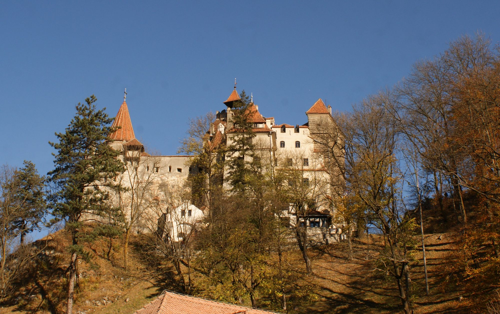
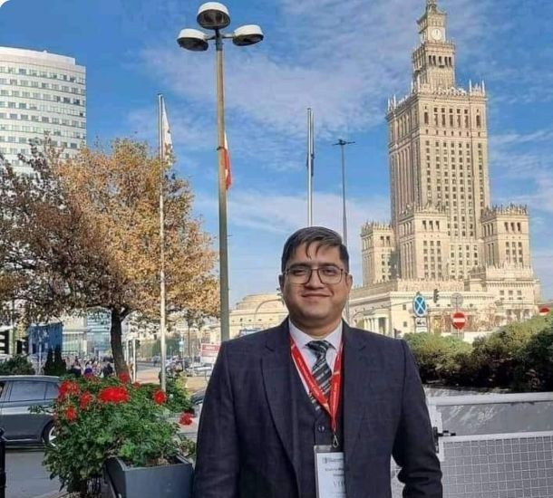

Classroom learning
Structured sessions with books and notes, led by an instructor in a dedicated classroom. General classes are kept separate from workshop practice.
A new country. A bigger future.
We help you take the next step with clarity, confidence, and care.

Personal guidance. Global opportunities.
SCROLL TO DISCOVER ↓Every great journey begins with someone who understands where you want to go.
Based in Hatirpool, Dhaka, CY Consultancy Centre supports students in Bangladesh and South Asia as they explore international education. From choosing a course to preparing for departure, we bring structure and personal attention to each step.
Alongside education counselling, we assist with work permit applications for Portugal, Malta, Romania and Poland.
Download company profile ↓Opening doors.
Empowering futures.
CY Skills Academy is a skills development and training centre for Bangladeshi learners who want to work abroad.
Training combines classroom learning with hands-on practice, so applicants approach the work visa process better prepared for the job as well as the paperwork.
Ask about training ↗Structured sessions with books and notes, led by an instructor in a dedicated classroom. General classes are kept separate from workshop practice.
Learners practise welding under an instructor’s guidance, working with tools and test pieces in the training area.
Group sessions that explain the training path and what to expect from the work visa process, with guidance on destinations such as Romania, Portugal and Malta.
Course list, duration, fees and batch schedules are confirmed when you enquire. Photographs are illustrative academy imagery.
Thoughtful guidance, practical support, and a clear way forward. All in one place.
Your academic background, ambitions and budget help us identify suitable courses, institutions and destinations.
Explore your options ↗Organised applications, document checklists, offer follow-up, visa file preparation and interview guidance.
Plan your application ↗Documentation and processing coordination for Portugal, Malta, Romania and Poland, including construction opportunities.
Discuss work pathways ↗IELTS & PTE guidance · Scholarship searches · Translation coordination · Pre-departure preparation
Student visa and work permit support, as set out in the CY Consultancy Centre company profile.
CY Consultancy Centre is a Dhaka-based consultancy supporting students in Bangladesh and South Asia with international education applications. We assist with institution selection, admissions, student visas, scholarship guidance and pre-departure preparation. Alongside education services, we provide work permit application support for Portugal, Malta and Romania.
Our student visa services cover Greece, Malta, Cyprus, the Netherlands, Sweden, Finland, Germany and Canada. We also provide work permit processing support for Portugal, Malta and Romania, including construction worker opportunities in Romania.
To help students make informed career choices through personalised counselling, strong relationships with applicants and institutions, and organised application support. Our approach values suitable applicants and informed decisions.
To become a leading education consultancy service provider in South Asia, helping learners realise their potential through suitable international education opportunities.
Discussing academic background, study goals, preferred destinations and available budget to identify suitable study options.
Supporting students as they compare courses, entry requirements, intakes and institution information.
Assisting with application forms, supporting documents, offer letter follow-up and communication about application progress.
Helping students organise academic records, identity documents, financial evidence and destination-specific supporting paperwork.
Helping students assemble the applicable checklist and prepare their application documents for submission.
Providing guidance on appointment preparation, submission arrangements and file follow-up where applicable.
Helping students explain their study plans and become familiar with the interview process.
Coordinating English translation, notarisation and related document services as required.
Guidance on English proficiency tests and admission requirements.
Support with scholarship searches, travel preparation, accommodation advice and orientation.
We assist applicants with work permit processing for Portugal, Malta and Romania, including construction worker opportunities in Romania. Our support covers document checklists, application paperwork, coordination during processing and work visa file preparation. Job duties, pay, accommodation, meals, fees and refund terms are explained for each specific offer.
We aim to provide clear explanations, careful handling of applicant documents and regular file updates. Applicants are encouraged to understand study or job requirements, costs and responsibilities before proceeding. Admission, work permit and visa decisions remain with the relevant institutions and authorities.
We work with education institutions and recruitment organisations to support suitable student applications. Our website describes partner connections in Cyprus and associates in Greece. We welcome discussions with institutions about recruitment and application coordination in Bangladesh.
Explore the places that could become part of your next chapter.
Your eligibility, institution requirements and current application routes are reviewed during counselling.
A profile for Romanian employers and recruitment partners: how CY Consultancy Centre prepares construction workers and their work permit files from Dhaka.
CY Consultancy Centre is a Dhaka-based consultancy with a work permit desk for Romania, including construction worker opportunities.
We help applicants understand the role before they commit, organise a complete document file, and stay informed while the application is processed. For employers, that means candidates who arrive at the process prepared, with a single point of coordination in Bangladesh.
Work permit and visa decisions are made by the relevant Romanian authorities. CY provides preparation and coordination support only.
Construction trades and training, shown as illustrative reference photography.
Trade and training photographs are illustrative reference images, not photographs of CY clients, employers or sites. *Student and applicant figure as published on cyconsultancy.com.

Leads CY Consultancy Centre from its Dhaka head office and welcomes conversations with Romanian employers and recruitment organisations.
Work permit and visa decisions are made by the relevant Romanian authorities. CY provides preparation and coordination support only.
Work permit and work visa file support for applicants pursuing agricultural work in Portugal.
CY Consultancy Centre prepares agriculture work visa applications for Portugal, from first briefing to a complete, well-organised file.
Farm work is seasonal and physically demanding, so we encourage every applicant to understand the role, location, working conditions and costs before they commit. Our team explains each specific offer in plain terms and keeps applicants updated while the file is processed.
Work permit and visa decisions are made by the relevant Portuguese authorities. CY provides preparation and coordination support only.
Agricultural work and Portuguese farmland, shown as illustrative reference photography.
Agriculture photographs are illustrative reference images, not photographs of CY clients, employers or farms.
Thinking about agriculture work in Portugal? Speak with our team about current options and offer-specific requirements.
Work permit and visa decisions are made by the relevant Portuguese authorities. CY provides preparation and coordination support only.
Work permit and work visa file support for applicants pursuing employment in Poland.
CY Consultancy Centre prepares work visa applications for Poland, from the first briefing to a complete, well-organised file.
Roles, employers and working conditions differ from one offer to the next, so we encourage every applicant to understand the specific offer, the location and the costs before they commit. Our team explains each offer in plain terms and keeps applicants updated while the file is processed.
Work permit and visa decisions are made by the relevant Polish authorities. CY provides preparation and coordination support only.
Polish cityscapes and construction sites, shown as illustrative reference photography.
Photographs are illustrative reference images, not photographs of CY clients, employers or sites.
Thinking about work in Poland? Speak with our team about current options and offer-specific requirements.
Work permit and visa decisions are made by the relevant Polish authorities. CY provides preparation and coordination support only.
We believe good guidance starts with listening. Our mission is to help you make informed choices, understand your options and move forward with a plan that fits you.
You bring the ambition.
We help you organise the journey.
Discuss your background, goals and preferred destination with our team.
Explore suitable options and receive a relevant document checklist.
Organise your documents and prepare the application paperwork.
Prepare your visa file and stay informed with application follow-ups.
Plan your travel and next steps after the required approvals.
Admission, work permit and visa decisions are made by the relevant institutions and authorities.
Working with education institutions and recruitment organisations to support suitable student applications.
From historic Mediterranean streets to inspiring campuses and northern cityscapes. Take a closer look.
Destination and campus imagery is illustrative. Click a photograph to explore.
Start with a consultation. We will discuss your academic or work background, goals, preferred destination and budget, then explain suitable options and the documents needed.
Our company profile covers student visa support for Greece, Malta, Cyprus, the Netherlands, Sweden, Finland, Germany and Canada. Speak with us about the options relevant to your profile.
We support application preparation and processing coordination for Portugal, Malta, Romania and Poland. Duties, pay, accommodation, meals, fees and refund terms should be reviewed for each specific offer.
We offer scholarship search guidance and advice on IELTS, PTE and admission requirements. Availability and eligibility depend on your chosen institution and programme.
Choose your interest and we’ll help you take the conversation forward.
Suite 1515, 14th Floor, Nahar Plaza
Bir Uttam C.R. Dutta Road, Hatirpool
Dhaka 1205, Bangladesh